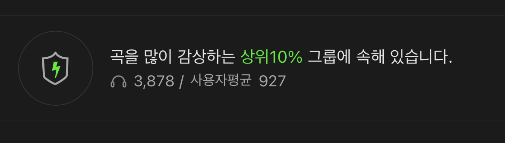
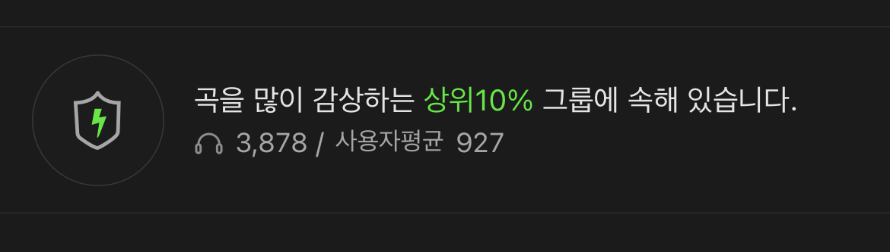

#WHO_AM_I?
안녕하세요, 저는 인하대학교 정보통신공학과 18학번 24살 조은서입니다.
다룰 줄 아는 언어는 C++ 뿐인 '코린이'지만
멋쟁이사자처럼 10기 활동을 통해 많이 배워가보려고 합니다!
(열쩡열쩡열쩡!💪🏻💪🏻💪🏻)
#WHERE_AM_I?
광주광역시에서 올라온 4년차 인후 자취러입니다😆
잠이 굉장히 많은 집순이라 밖에 잘 안나가지만...
그래도 불러주면 잘 나갑니다!!!
#MBTI
청렴결백한 논리주의자 "ISTJ"입니다.
I 말고 45%:55% 정도로 나와서 그런지
게으른 계획주의자의 표본이 아닌가 하는 생각도 들어요🙄
#FAVORITE
1. 맛집투어🍜
한식, 양식, 중식, 일식, 디저트 등 가리는 거 없이 다 좋아하는 사람
나야나나야나~
(광주 출신으로서 광주 맛집 궁금하시다면 다 알려드리도록
하겠습니다😉)
2. 노래 듣기🎶 & 부르기🎤
댄스, 발라드, R&B 가리지 않고 모든 노래를 좋아합니다!
(🍈에서 인증 받은 상위 10% 감상자...!)
노래 부르는 것도 좋아하는데, 잘 부르지는 못해서 주로 혼코노를 많이
합니다!
🔔 #공연_정보_알리미_서비스 🔔
내가 관심 있는 다양한 공연(콘서트, 뮤지컬, 클래식 등)에 대해
즐겨찾기 할 수 있고,
해당 공연에 대한 예매 정보의 업테이트가 발생 시 알림을 받을 수 있어,
공연 정보를 찾으러 다니는 수고를 줄일 수 있게 해주는 서비스입니다.
🏃🏻♂️🕑 #30일_챌린지_기록_or_제작_서비스 🏃🏻♂️🕑
30일 동안 이루고자 하는 챌린지를 직접 제작하여 기록할 수 있도록
하고,
특별히 하고자 하는 일이 없어도 사소한 챌린지(ex. 사진 찍기 챌린지,
덕질 챌린지, 음악 듣기 챌린지 등)를 템플릿으로 제공하여, 한 달 동안
사소한 것이든 아니든 무언가를 꾸준히 할 수 있도록 하는, 동기부여를
제공해줄 수 있는 서비스입니다.
 
